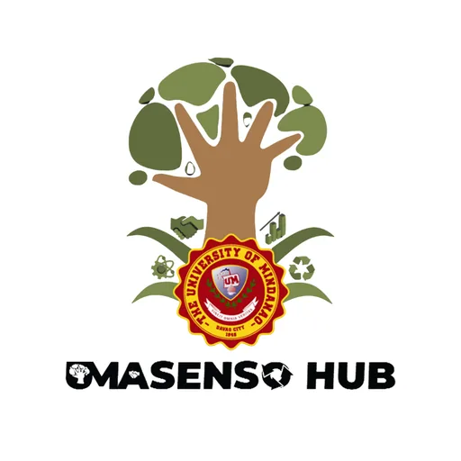

UMasenso Hub
University of Mindanao · Region XI
UMasenso Hub is the Technology Business Incubator (TBI) of the University of Mindanao (UM) in Davao City, operating under the UM Research and Innovation Center (UMRIC). The hub specializes in startups addressing environmental solutions — its designated banner sector — reflecting Davao City's strategic position as a center for environmental management, sustainable development, and climate resilience in Mindanao.
- Category
- Technology Business Incubator
- Host institution
- University of Mindanao
- City
- Davao City
- Region
- Region XI
- Operating status
- Operating
About the Center
As a DOST-PCIEERD-funded incubator embedded within the University of Mindanao, UMasenso Hub draws on UM's research capacity and academic networks to support innovators working on waste management, green technology, clean energy, pollution control, and other environmentally focused enterprise. The hub connects startup founders with mentors, business development support, and DOST funding pathways to bring environmental innovations from concept to market.
"UMasenso" reflects the Filipino word for progress (masenso), embodying the hub's aspiration to drive meaningful advancement through innovation with environmental and social impact in Davao City and across Region XI.
Programs & Services
- Startup Incubation — Incubation support for startups focused on environmental solutions, clean technology, and sustainable enterprise
- Mentoring & Coaching — Expert guidance on business planning, market strategy, and sustainable business modeling
- Technology Development Support — Technical assistance for prototyping and refining environmental technology products and processes
- DOST Funding Access — Facilitation of DOST-PCIEERD innovation grants and commercialization funding for qualifying startups
- Research Linkages — Connections to UM Research and Innovation Center's labs, facilities, and academic expertise
- IP & Legal Assistance — Support for intellectual property registration and commercialization planning
- Demo Days & Industry Connections — Showcasing incubatee innovations to investors, government, and environmental industry partners in Davao and beyond
Contact
Sources & references
- umresearchcenter.com/center/umasenso
- umindanao.edu.ph/info/news/article/44
- ns2.umindanao.edu.ph/info/news/article/umasenso-hub-technology-business-inc…
Details are drawn from public records and the sources above, July 2026.
Startupreneur Innovation Hub · synced from the Notion catalog (July 2026) · status: published.